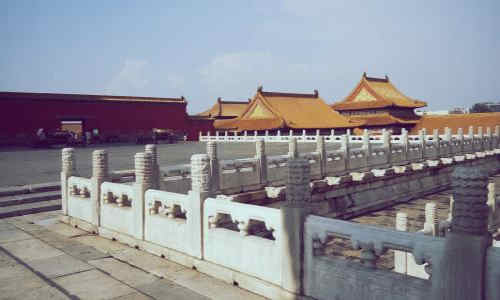
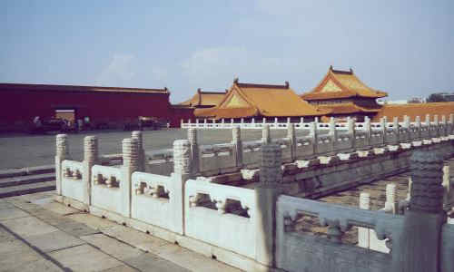

morly旅游圈
由永乐帝朱棣下令建造，依据其布局与功用分为“外朝”与“内廷”两大部分。以乾清门为界，乾清门以南为外朝，以北为内廷。 外朝也称为“前朝”，以太和殿(金銮殿)、中和殿、保和殿三大殿为中心，是封建皇帝行使权力、举行盛典的地方。 内廷以乾清宫、交泰殿、坤宁宫后三宫为中心，以及东西两侧的东六宫和西六宫，是封建帝王与后妃居住之所，也就是俗称的“三宫六院”。 故宫内珍藏有大量珍贵文物，据统计有上百万件，占全国文物总数的六分之一。钟表馆每天11点和14点有钟表演示，不可错过。 故宫需要从南到北参观，午门是唯一的入口，出口是东华门和神武门。
交通: 公交：乘坐1路、2路、52路、59路、82路、99路、120路、126路、观光1线、专2路在“天安门东”站下车然后步行约900米到达午门。 地铁：乘坐地铁1号线在“天安门东”站下车，步行约900米，即可从午门进入故宫。（故宫博物院的南门） 故宫不设停车场，周边的公共停车场也较远，故不建议驾车前来。
门票: 门票:成人票60人民币/学生票20人民币；内部景点:珍宝馆10人民币/钟表馆10人民币 (4月1日-10月31日 周二-周日) 门票:成人票40人民币/学生票20人民币；内部景点:珍宝馆10人民币/钟表馆10人民币 (11月1日-次年3月31日 周二-周日) 半票:60岁及以上老年人、低保户，凭有效证件入园。 免票:离休干部凭离休证、1.2米以下儿童、残疾人、随团导游，凭有效证件入园。 tips: 学生票包含，大中小学生，除去成人教育、研究生。 故宫所有人需凭身份证入园。 故宫门票全部在官网提前十天预售，现场已不设购票窗口，但可微信支付入馆，每天入馆人数与网络售票共享。 “三八”妇女节，女性观众享受门票半价优惠；“六一”儿童节，14周岁以下儿童（含14周岁），免费参观。随同家长一人，享受半价优惠；“八一”建军节，现役军人凭有效证件，免费参观。
开放时间: 08:30-17:00；停止售票时间:16:00；停止入场时间:16:10 (4月1日-10月31日 周二-周日) 08:30-16:30；停止售票时间:15:30；停止入场时间:15:40 (11月1日-次年3月31日 周二-周日)
内容整理至网络，如有侵权，请联系我们！1255394075@qq.com
 
